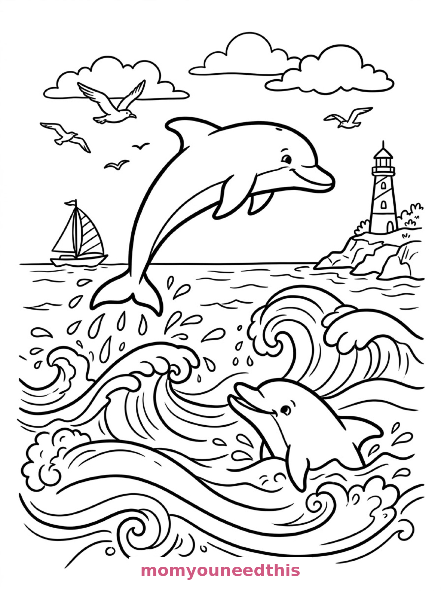
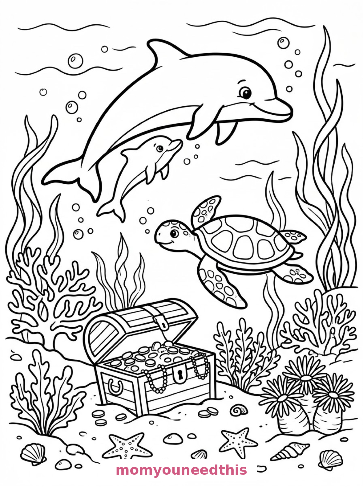
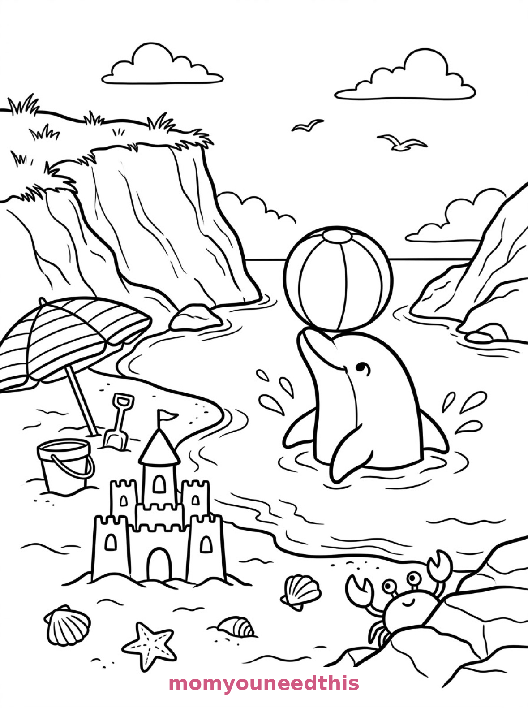

Free Dolphin Coloring Pages Leaping, Mother & Calf, Beach Ball Printables
Ocean animals are a reliable favorite right after an aquarium trip or a dolphin video watched on repeat. Fair warning: the blue crayons run out first on pages like these — keep a spare in the box.
Last updated: October 23, 2026
Quick Answer
Yes — this page has three free printable dolphin coloring pages: a dolphin leaping in a high arc out of the waves, a mother dolphin and calf swimming over a coral reef, and a dolphin balancing a beach ball on its nose in a cove. Bold outlines and big spaces, made for little hands. Download, print on letter-size paper, and hand over the crayons — no signup, no cost.
At a Glance
- Ages: 3–8
- Pages: 3 free printables
- Format: Print at home, letter size
- Cost: Free, no signup
- Supplies: Crayons or markers
- Time: 10–20 minutes
🐬 Dolphin Leaping Over the Waves Coloring Page

🎨 Download Your Free Leaping Dolphin Coloring Page
A dolphin leaps in a high arc out of rolling ocean waves, water droplets spraying from its tail, a second dolphin surfacing below, a sailboat with a striped sail on the horizon, gulls overhead and a lighthouse on a rocky point — bold outlines, big spaces, zero signup.
⬇️ Download Free Leaping Dolphin Page 🖨️ Print Leaping Dolphin Page
🎁 Free printable for preschoolers & kids
🐬 Mother Dolphin and Calf Coloring Page

🎨 Download Your Free Dolphin Calf Coloring Page
A mother dolphin and a calf swim side by side above a coral reef, with branching corals and sea fans rising from the seabed, a sea turtle paddling past a treasure chest, starfish and shells scattered below and seaweed ribbons swaying — bold outlines, big spaces, zero signup.
⬇️ Download Free Dolphin Calf Page 🖨️ Print Dolphin Calf Page
🎁 Free printable for preschoolers & kids
🏖️ Dolphin with a Beach Ball Coloring Page

🎨 Download Your Free Beach Ball Dolphin Coloring Page
A dolphin balances a beach ball on its nose at the edge of a storybook cove, splashing in shallow waves near a sandy shore with a striped beach umbrella, a sandcastle with a flag, a crab waving from behind a rock and grass-tufted cliffs — bold outlines, big spaces, zero signup.
⬇️ Download Free Beach Ball Page 🖨️ Print Beach Ball Page
🎁 Free printable for preschoolers & kids
More Coloring Pages
Tap any picture to open its theme page and download the free printable.
🐬 How To Use This Page
- Browse the three designs and pick the dolphin scene your child will love most.
- Tap download or print under that design — the file opens full-size, ready for letter-size paper.
- Print a couple of copies of the beach ball page — that trick never gets old.
- Color together with crayons or markers and make the dolphin clicks.
🌊 Why Kids Love Dolphin Coloring Pages
Dolphins are the ocean's friendliest face, and these pages catch them in motion: mid-leap, mid-swim, mid-trick. A dolphin's smooth, curved shape is also one of the most satisfying outlines in the whole coloring world — one flowing line from nose to tail that takes a long, happy crayon stroke.
Each scene adds its own cast — a second dolphin, a turtle with a treasure chest, a crab waving from a rock — so no page ends when the dolphin is done. The coloring continues into reefs, coves and lighthouses.
🐬 Meet the Three Dolphin Scenes on This Page
The leap. A dolphin leaps in a high arc out of rolling ocean waves with water droplets spraying from its tail, a second dolphin surfacing below, a sailboat with a striped sail on the horizon, seagulls wheeling overhead, and a lighthouse standing on a rocky point in the distance. It is the most joyful page in the set — pure mid-air energy.
The mother and calf. A mother dolphin and a calf swim side by side above a coral reef, branching corals and sea fans rising from the seabed, a sea turtle paddling past a treasure chest half-buried in the sand, starfish and shells scattered below, and ribbons of seaweed swaying up toward the wavy surface. It is the sweetest page in the set — two dolphins, one reef, and a turtle with treasure.
The beach ball trick. A dolphin balances a beach ball on its nose at the edge of a storybook cove, splashing in shallow waves near a sandy shore, a striped beach umbrella and a sandcastle with a small flag on the beach behind, a crab waving a claw from behind a rock, and cliffs with tufts of grass curving around the cove. It is the silliest page in the set — and the ball is begging for rainbow stripes.
✏️ Dolphin Coloring Tips
- Smooth gray-blue is the classic. A dolphin colored in one soft gray or blue with a white belly looks instantly real; a second copy can go full rainbow.
- Stripe the beach ball. Alternating bright stripes on the ball are the happiest detail in the whole set.
- Two blues for the sea. Light waves, deeper water below — the leaping dolphin pops right out of the page.
- Gold for the hidden treasure. On the reef page, the turtle's treasure chest is small — a flash of yellow-gold makes it the secret star.
🐬 Coloring Pages for Different Ages
For ages 3 to 4, start with the beach ball dolphin. One big dolphin, one striped ball and a sandcastle are all a little colorer needs at the cove.
For ages 5 to 6, the leaping dolphin is the sweet spot. Two dolphins, a boat and a lighthouse give a real ocean scene with big, bold shapes throughout.
For ages 7 to 8, hand over the mother and calf reef. The corals, sea fans, turtle and treasure reward slow, detailed coloring — a full underwater world on one page.
🌊 More Dolphin Fun After Coloring
Name the pair: the reef page's mother and calf deserve names, and writing them under the swimmers turns the sheet into a family portrait. Then check the cove crab — it waved first, it probably has a name too.
For the whole ocean cast, visit the ocean animals coloring pages — where another dolphin leaps beside a sailing boat, this time with a whale. And the cove continues on the beach coloring pages.
🔗 More Free Printables You’ll Love
- Free Ocean Animals Coloring Pages A reef turtle, a dolphin and whale, and a giant squid to color.
- Free Sea Creatures Coloring Pages An octopus arch, a mermaid's garden and a tide pool to color.
- Free Beach Coloring Pages Sand, shells and seaside scenes to print and color.
- All Free Coloring Pages Browse every free coloring page on the site, organized by theme.
❓ Dolphin Coloring Pages FAQ
Are these dolphin coloring pages really free?
Yes — all three designs on this page are free original printables from MomYouNeedThis. Download them, print them at home, and color — no signup and no cost.
What ages are these coloring pages best for?
Kids ages 3 to 8 get the most from this set. The beach ball dolphin is the gentlest start for younger children, while the leaping and reef scenes have the detail older kids enjoy.
How do I print a coloring page?
Tap the download button under the design you want, then print the file on regular letter-size paper. The print button opens the full-size page in a new tab if you prefer to print from there.
Is there a baby dolphin coloring page in this set?
Yes — the second design shows a mother dolphin and her calf swimming side by side above a coral reef, with a sea turtle and a treasure chest below them.
Can I make a dolphin coloring book from these pages?
Yes — print all three designs, stack them in order, and staple along the left edge. Add a cover sheet with your child's name for a finished homemade dolphin coloring book.